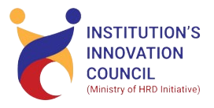
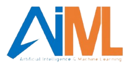
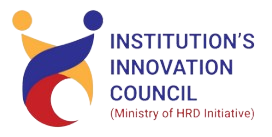
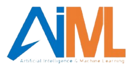

INTRODUCTION TO SYMPOSIUM
The purpose of this symposium is to allow experts in a given field to meet, discuss papers/topics in question, and examine the issues and trends associated with the topics. From these discussions, solutions and recommendations can develop for the next step to be actioned. The findings from a symposium can be used to help others within the field of research and can endure testing if applicable. Alternatively, this exchange can stimulate others to seek new knowledge and findings within their sector/field. Essentially the purpose is to facilitate the free exchange of information
OBJECTIVES OF SYMPOSIUM
Our primary objective for Symposium is to create a dynamic platform that fosters knowledge exchange, sparks innovation, and inspires the next generation of researchers and innovators. We aim to bring together researchers, scholars, and students from diverse backgrounds to showcase cutting-edge research, visionary ideas, and technological prototypes, facilitating interdisciplinary collaboration and bridging the gap between academia and industry.
TOPICS FOR SYMPOSIUM
Research paper for the following research themes:
- Internet of Things (IoT)
- Smart Manufacturing
- Smart Engineering Data Science
- Computer Science and Engineering
- Artificial Intelligence (AI)
- Computer Vision
- 3D Printing & scanning Machine Learning (ML)
- Deep Learning
- Embedded System & Interfacing
- Robotics
ACTIVITIES OF SYMPOSIUM
Paper Contest
A paper symposium is a cohesive group of paper presentations that focus on a specific topic. The goal of a paper contest is to encourage participants/research scholars and students to think outside the box and develop situational analysis-based work. This symposium will explore intellectual achievement, bringing together scholars to present their ground breaking research papers.
Activities that will take place at a symposium:
- Presentations: Speakers present their research.
- Audience questions: The audience can ask questions after the presentations. Networking: Symposiums are more informal and allow for networking.
- Discussion: Experts discuss papers and topics, and examine issues and trends.